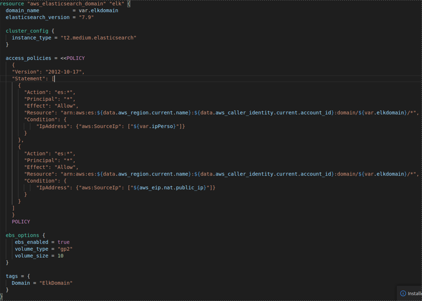
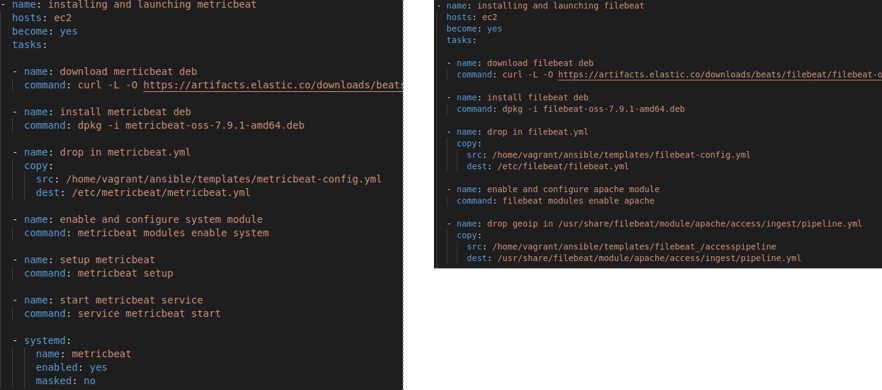
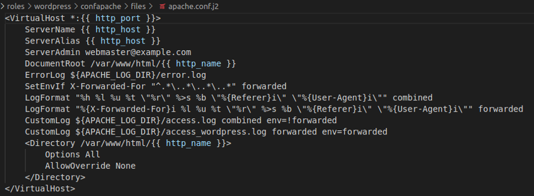
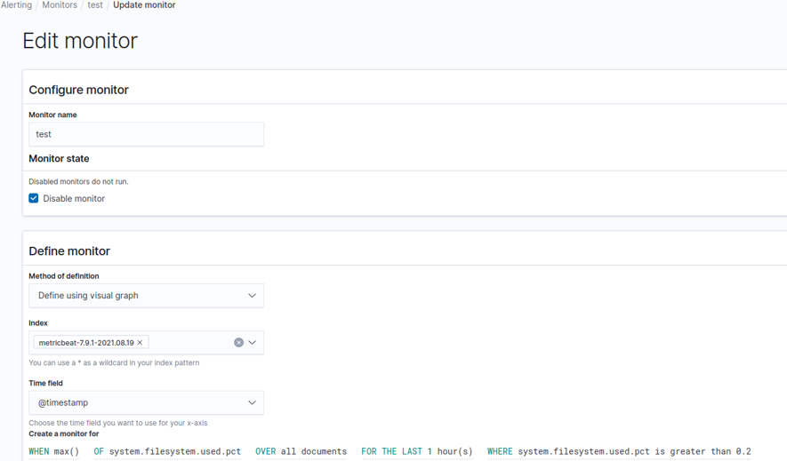
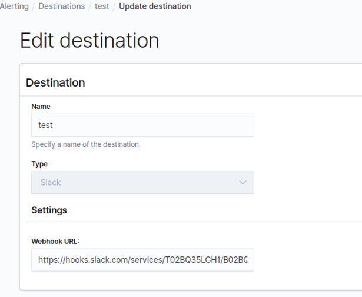
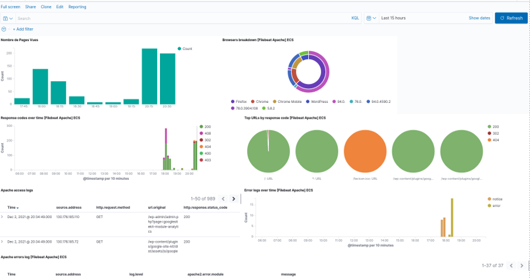

Projet 07 - Mettez en place la supervision de votre cloud
Posted on Fri 15 July 2022 in Accueil
Le but de cet article est de rajouter une couche de supervision sur le projet 05. Je vous invite à revoir ce projet pour la partie Infrastructure-as-Code.
Le code Terraform a ensuite été adapté afin de rajouter la couche ELK dans notre infrastructure AWS :

Puis nous lançons, via Ansible, la configuration de nos fichiers metricbeat et filebeat :

Enfin, nous terminons par la configuration de Apache afin de pouvoir récuperer les IPs forwardés:

Une fois toute ces configurations faites, il est possible de paramétrer l'alerting :

Nous enverrons toutes nos alertes sur notre canal Slack :

Ce qui nous permet, après quelques customisations, d'obtenir un dashboard exploitable de notre infrastructure :
